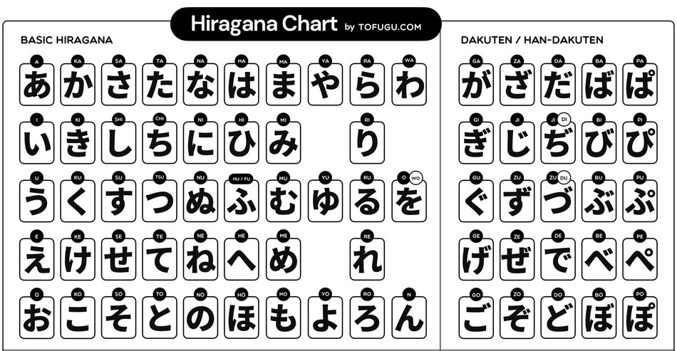
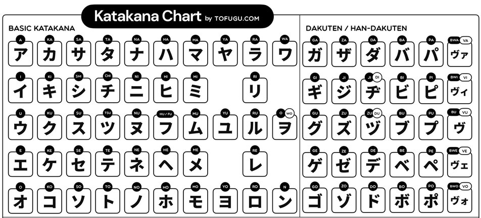
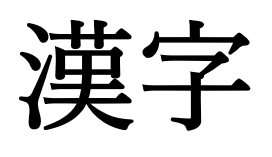

The Three Japanese Alphabets
In the majority of languages with a writing system, it is made up of characters with The majority of writing systems for spoken languages contain characters that represent certain phonetic sounds, but don't have meanings in of themselves, however, that's not always the case. Some languages such as Ancient Egyptian, use a system of pictograms, symbols that mainly represent certain ideas or concepts. Japanese on the hand, uses a mix of both.
Hiragana
Hiragana are a short set of symbols that represent the basic phonetic sounds of the Japanese language and carry no meaning by themselves. The majority of Japanese text is written in hiragana.
Katakana
Katakana, similar to hiragana, are also a short set of symbols that represent the basic phonetic sounds of the Japanese language, however, katakana is used mainly for words of foreign origin. They tend to be much more angular than hiragana (i.e. アメリカ[a-me-ri-ka]=Americka, コンピューター[kon-pyu~-ta~]=computer, ハンバーガー[han-ba~-ga~]= hamburger, etc.)
Kanji
Kanji are symbols adapted from Chinese characters used to represent many ideas and concepts. Kanji often have multiple pronunciations based on the context in which it found. As of 2010, a total of 2200 unique kanji were approved for general use, however, many more exist beyond this number, but tend to be less commonly used.